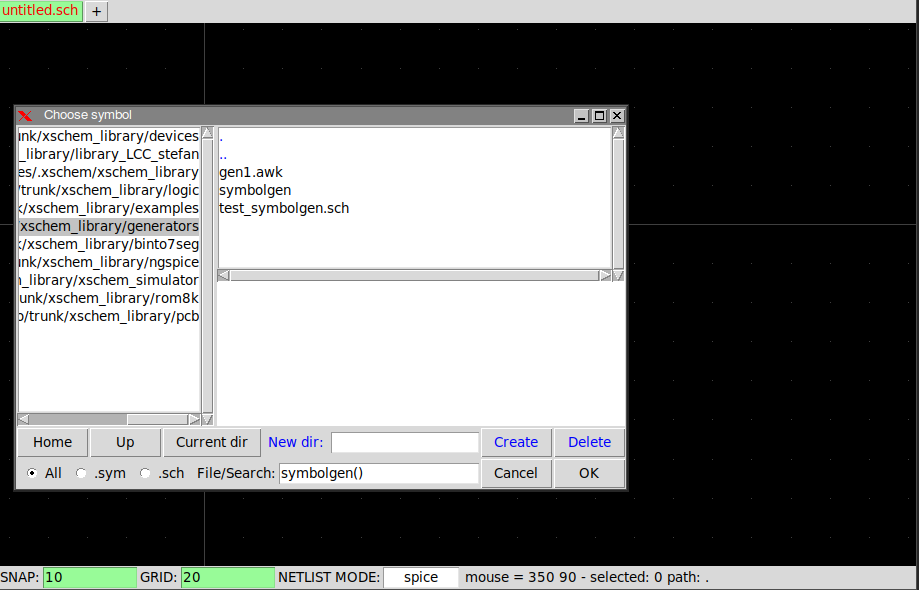
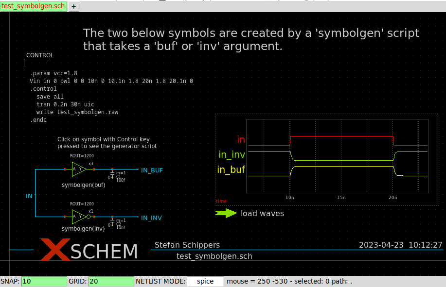
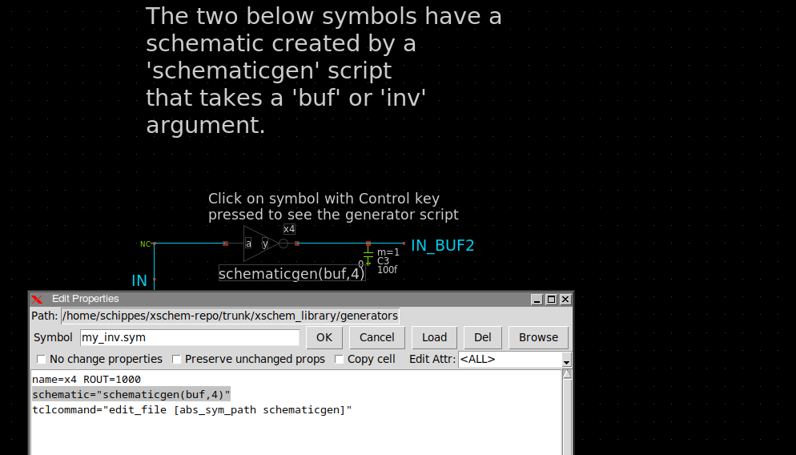

TUTORIAL: SYMBOL AND SCHEMATIC GENERATORS (aka PCELLS)
It is possible to insert a symbol by referencing a generator script instead of a .sym file. When inserting the symbol select the All checkbox to see all files , select the generator script, then in the File/Search textbox add two parenthesis () (or put required parameters in between, like (buf,250)). If you don't append the () xschem will do that for you.

The symbolgen.tcl generator in this example takes two parameters, a (buf) or a (inv)
parameter to generate a buffer or an inverter, respectively, and a output resistance value (a number)
If no parameters are given (empty parentheses) a buffer is generated with a default ROUT.
In this example a tcl script is used, you can use any language you like. The script only needs to parse the parameters (if any) and outputs on standard output a regular xschem symbol file.
#!/bin/sh
# the next line restarts using wish \
exec tclsh "$0" "$@"
set arg1 [lindex $argv 0]
set rout [lindex $argv 1]
# puts stderr "arg1=|$arg1| $rout=|$rout|"
if { $arg1 eq {inv}} {
puts "v {xschem version=3.1.0 file_version=1.2}
K {type=subcircuit
xvhdl_primitive=true
xverilog_primitive=true
xvhdl_format=\"@@y <= not @@a after 90 ps;\"
xverilog_format=\"assign #90 @@y = ~@@a ;\"
format=\"@name @pinlist @symname wn=@wn lln=@lln wp=@wp lp=@lp\"
template=\"name=x1 wn=1u lln=2u wp=4u lp=2u\"
schematic=schematicgen.tcl(inv)}
L 4 -40 0 -20 0 {}
L 4 -20 -20 20 0 {}
L 4 -20 -20 -20 20 {}
L 4 -20 20 20 0 {}
L 4 30 -0 40 -0 {}
B 5 37.5 -2.5 42.5 2.5 {name=y dir=out }
B 5 -42.5 -2.5 -37.5 2.5 {name=a dir=in }
A 4 25 -0 5 180 360 {}
T {$arg1 $rout} -47.5 24 0 0 0.3 0.3 {}
T {@name} 25 -22 0 0 0.2 0.2 {}
T {y} 7.5 -6.5 0 1 0.2 0.2 {}
T {a} -17.5 -6.5 0 0 0.2 0.2 {}
"
} else {
puts "v {xschem version=3.1.0 file_version=1.2}
K {type=subcircuit
xvhdl_primitive=true
xverilog_primitive=true
xvhdl_format=\"@@y <= @@a after 90 ps;\"
xverilog_format=\"assign #90 @@y = @@a ;\"
format=\"@name @pinlist @symname wn=@wn lln=@lln wp=@wp lp=@lp\"
template=\"name=x1 wn=1u lln=2u wp=4u lp=2u\"
schematic=schematicgen.tcl(buf)}
L 4 20 0 40 0 {}
L 4 -40 0 -20 0 {}
L 4 -20 -20 20 0 {}
L 4 -20 -20 -20 20 {}
L 4 -20 20 20 0 {}
B 5 37.5 -2.5 42.5 2.5 {name=y dir=out }
B 5 -42.5 -2.5 -37.5 2.5 {name=a dir=in }
T {$arg1 $rout} -47.5 24 0 0 0.3 0.3 {}
T {@name} 25 -22 0 0 0.2 0.2 {}
T {y} 7.5 -6.5 0 1 0.2 0.2 {}
T {a} -17.5 -6.5 0 0 0.2 0.2 {}
"
}
The generators/test_symbolgen.sch is a test schematic that places two instances of this symbol generator, one as symbolgen.tcl(buf,@ROUT\) and one as symbolgen.tcl(inv,@ROUT\). The buf,@ROUT indicates two parameters, one indicates if it is a buffer or an inverter, the second passes an additional parameter. Instead of using a numeric literal the instance value ROUT is passed to the generator. A backslash is needed before the closing parenthesis to avoid this parenthesis to be considered as part of the parameter. The schematic implementations of these symbols are defined by the generator using a schematic attribute. The buffer will use schematicgen.tcl(buf) and the inverter will use schematicgen.tcl(inv), these schematic names are referencing a schematic generator script instead of regular schematic files. You see different schematics (see below picture) when descending the buf or inv generator. See next section about schematic generators.
The following is the extracted netlist from this example:
** sch_path: /home/schippes/xschem-repo/trunk/xschem_library/generators/test_symbolgen.sch **.subckt test_symbolgen x1 IN_INV IN symbolgen_tcl_inv_1200 wn=1u lln=2u wp=4u lp=2u x3 IN_BUF IN symbolgen_tcl_buf_1200 wn=1u lln=2u wp=4u lp=2u C1 IN_BUF 0 100f m=1 C2 IN_INV 0 100f m=1 **** begin user architecture code .include models_rom8k.txt .param vcc=3 vvcc vcc 0 dc 3 Vin in 0 pwl 0 0 100n 0 100.1n 3 200n 3 200.1n 0 .control save all tran 1n 300n uic write test_symbolgen.raw .endc **** end user architecture code **.ends * expanding symbol: symbolgen.tcl(inv,1200) # of pins=2 ** sym_path: /home/schippes/xschem-repo/trunk/xschem_library/generators/symbolgen.tcl ** sch_path: /home/schippes/xschem-repo/trunk/xschem_library/generators/schematicgen.tcl .subckt symbolgen_tcl_inv_1200 y a wn=1u lln=2u wp=4u lp=2u *.opin y *.ipin a m2 y a VCC VCC cmosp w=wp l=lp ad='wp *4.6u' as='wp *4.6u' pd='wp *2+9.2u' ps='wp *2+9.2u' m=1 m1 y a 0 0 cmosn w=wn l=lln ad='wn *4.3u' as='wn *4.3u' pd='wn *2+8.6u' ps='wn *2+8.6u' m=1 .ends * expanding symbol: symbolgen.tcl(buf,1200) # of pins=2 ** sym_path: /home/schippes/xschem-repo/trunk/xschem_library/generators/symbolgen.tcl ** sch_path: /home/schippes/xschem-repo/trunk/xschem_library/generators/schematicgen.tcl .subckt symbolgen_tcl_buf_1200 y a wn=1u lln=2u wp=4u lp=2u *.opin y *.ipin a m2 net1 a VCC VCC cmosp w=wp l=lp ad='wp *4.6u' as='wp *4.6u' pd='wp *2+9.2u' ps='wp *2+9.2u' m=1 m1 net1 a 0 0 cmosn w=wn l=lln ad='wn *4.3u' as='wn *4.3u' pd='wn *2+8.6u' ps='wn *2+8.6u' m=1 m3 y net1 VCC VCC cmosp w=wp l=lp ad='wp *4.6u' as='wp *4.6u' pd='wp *2+9.2u' ps='wp *2+9.2u' m=1 m4 y net1 0 0 cmosn w=wn l=lln ad='wn *4.3u' as='wn *4.3u' pd='wn *2+8.6u' ps='wn *2+8.6u' m=1 .ends .end
This approach allows to create polymorphic symbols. Multiple parameters may be given to the generator script, like symbolgen.tcl(inv,hv,100). Xschem will call the symbolgen.tcl script with the following command: symbolgen.tcl inv hv 100 and take the standard output from the script as the symbol file to load and display.
Schematic generators (pcells)
The same approach used for symbol generators can be used for schematic generators. If you add a schematic=schematicgen.tcl(buf,4) attribute to an instance xschem will look for a script named schematicgeni.tcl in the search paths and call it with the given parameters (that is, execute the command schematicgen.tcl buf 4) and read the produced output as a schematic file.
